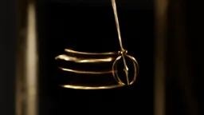
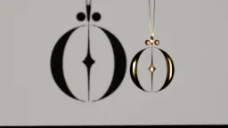
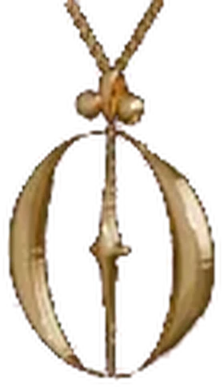
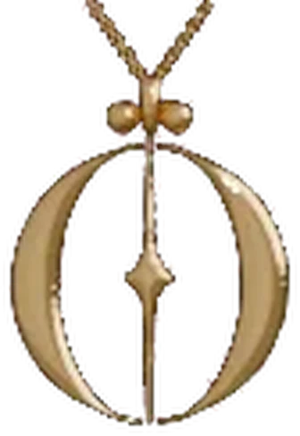

STAND-IN · img/oitava/hero/master.* (the director’s signature shot: Beside its own giant shadow on the screen (story/product-stills/DIRECTOR-SHOTS.md; its 144p preview stands in); 8K, 7680 × 4320)Chapter I · Accessories
Öitava
Pendant
 STAND-IN · img/oitava/front/master.* (the front, 16K render, once David passes its 1600 preview (stand-in: catalogue144 oitava_front_256x144.png; phones: oitava_front_108x144.png); 16K, 15360 × 8640)
STAND-IN · img/oitava/front/master.* (the front, 16K render, once David passes its 1600 preview (stand-in: catalogue144 oitava_front_256x144.png; phones: oitava_front_108x144.png); 16K, 15360 × 8640)front
 STAND-IN · img/oitava/three-quarter/master.* (three-quarter view, 8K (stand-in: catalogue144 oitava_threequarter_256x144.png; phones: _108x144); 8K, 7680 × 4320)
STAND-IN · img/oitava/three-quarter/master.* (three-quarter view, 8K (stand-in: catalogue144 oitava_threequarter_256x144.png; phones: _108x144); 8K, 7680 × 4320)three quarter
 STAND-IN · img/oitava/back/master.* (back view, 8K (stand-in: catalogue144 oitava_back_256x144.png; phones: _108x144); 8K, 7680 × 4320)
STAND-IN · img/oitava/back/master.* (back view, 8K (stand-in: catalogue144 oitava_back_256x144.png; phones: _108x144); 8K, 7680 × 4320)back
Chapter I
Öitava
Pendant
Named for the unit Minas weighed its gold in. The Ö in solid 18k gold: two crescents open at top and foot, a fine spindle with its four-point star, two balls above, on a fine gold chain.
- METAL
- SOLID 18K YELLOW GOLD, POLISHED
- SIZE
- 30.0 × 23.9 MM
- CHAIN
- FINE 18K CABLE CHAIN
USD 3,800 pre-sale USD 3,250
Made to order.
Keep a seatThe register sees the pre-sale first.
Details
- Pre-sale
- Made to order. We email your delivery date once production is confirmed. Cancel for a full refund any time before production starts.
- Returns
- Exchanges within 14 days of delivery, unused and with tags.
- Care
- Keep it in its pouch, apart from other pieces. Wipe with a soft dry cloth. Care
- Size
- The measurements
Close, at 100%
 STAND-IN · img/oitava/detail-detail/master.* (the balls, the bail and the star, 8K close-up; 8K, 7680 × 4320)
STAND-IN · img/oitava/detail-detail/master.* (the balls, the bail and the star, 8K close-up; 8K, 7680 × 4320)The balls, the bail and the star

STAND-IN · img/oitava/detail-shadow/master.* (its shadow in the projector’s beam, 8K close-up; 8K, 7680 × 4320)Its shadow in the projector’s beam



Where it is going
The wall
Hung on its chain, one hard shadow beside it.
SIZE30.0 × 23.9 MMFrom the bail’s top to the foot, and across the crescents.
BALLS3.1 MMTwo, 4.7 mm apart centre to centre, either side of the bail.
BAILA TAPERED LOOP5.4 mm tall, 1.9 mm across at its top and 0.9 mm at its foot, edge-on to the front.
THE SPINDLEA FOUR-POINT STARA fine needle, rounded in section, its sharp star at the middle.
CRESCENTS4.1 MM AT THE MIDDLEOpen at top and foot, each drawn to a sharp point, up to 2.8 mm proud at the front and 1.0 mm at the back.
CHAINFINE 18K CABLE1.1 mm links of 0.22 mm wire.
METALSOLID 18K YELLOW GOLDPolished throughout.
In the world
Öitava
Pendant
The wall
Scroll to walk around it